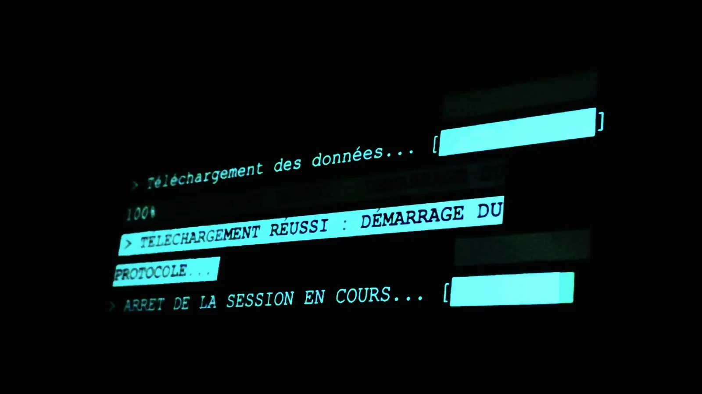
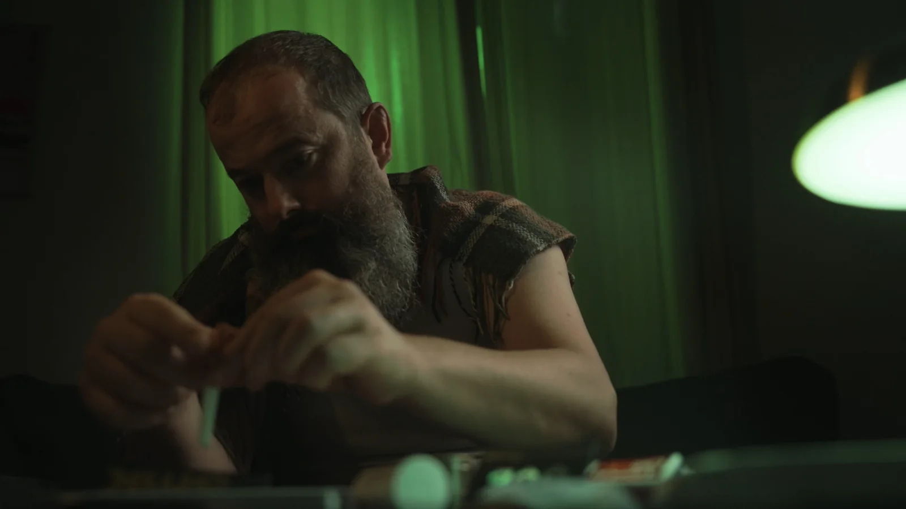
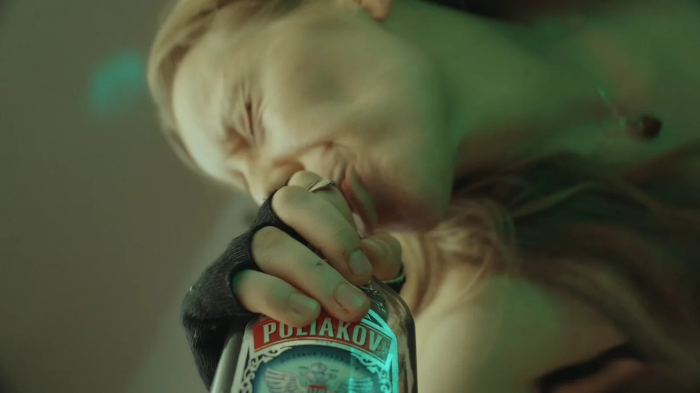
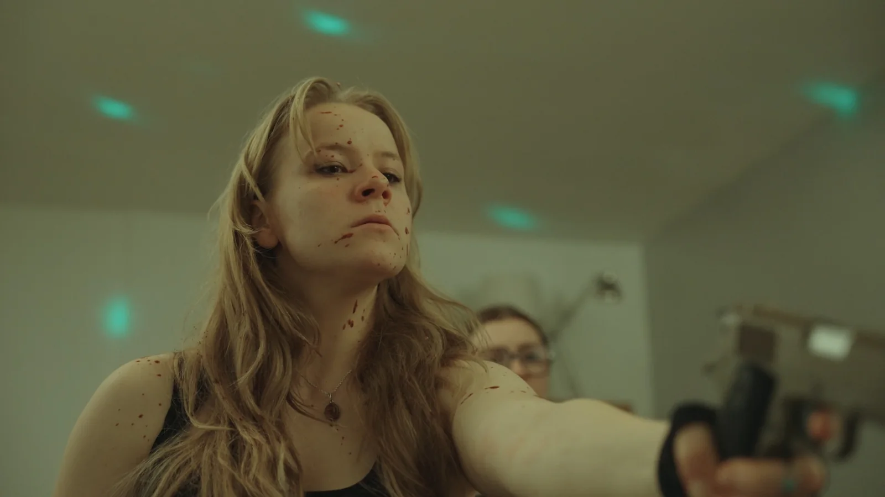
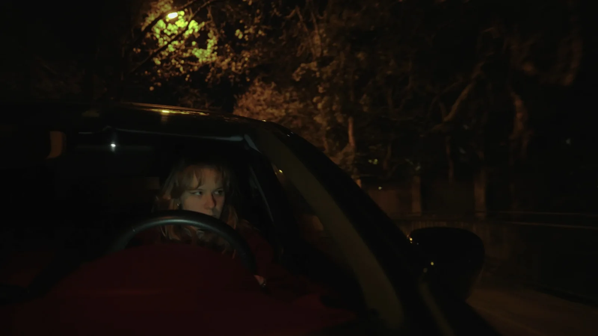
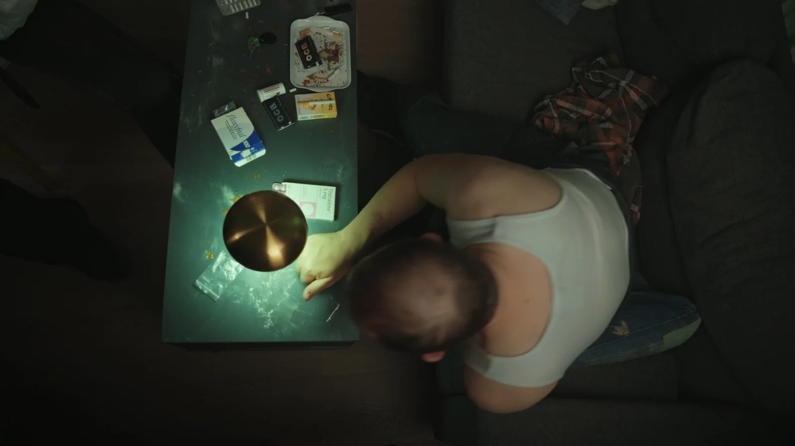

CAM 00 · ECHO REC
> Ver mis animaciones en la película · 3:40
En un mundo donde una élite lo ve todo gracias a un chip impuesto a cada persona, Eli se apodera de ese poder.
Una élite lo ve todo, lo sabe todo, pero no siente nada, gracias a un chip impuesto a cada persona. Por una serie de casualidades, Eli se apodera de ese poder.

A pesar de las advertencias de su mentor, drogadicto notorio y algo loco, Eli quiere salir del sistema. Y acaba viéndolo todo, sabiéndolo todo.

Primero la fascinación, luego la obsesión. Lo que Eli ve y siente desemboca en la paranoia, hasta un crimen que toda la élite presencia.


Al buscar la ayuda de su mentor, Eli descubre que la persona que más le importaba también tiene ese poder. Lo demás se descubre en la película.


Dos elementos de interfaz diseñados en After Effects para hacer visible el chip en pantalla: la etiqueta que señala un comportamiento vigilado y el escáner que confirma la conexión. Yo había propuesto una versión completa; el director prefirió una versión más sencilla para la película, que adapté.
Asistente de dirección: plan de rodaje y organización del rodaje.
Motion design: diseño en After Effects de la etiqueta de identificación y de la pantalla de conexión del chip.
Cortometraje realizado entre cinco, en el marco de la formación IMAC.